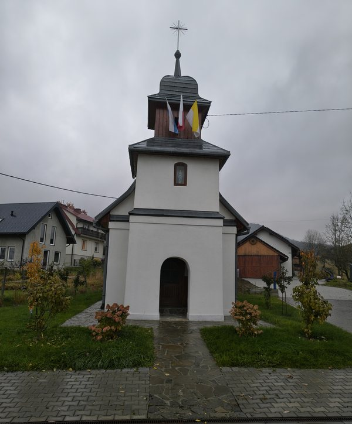

Jurków, Szyrszenie · 1826 · de mi libro «Ród Podgórnich z Jurkowa» (El linaje de los Podgórni de Jurków)
La capilla de Szyrszenie
En Szyrszenie, en Jurków Dolny, frente a la casa n.º 5, se alza una capilla de obra de la Sagrada Familia, de 1826. En mayo de 2026, la parroquia celebró su bicentenario. ¿Quién la construyó?
Traducido del original polaco con la ayuda de Claude. Las citas de los libros las doy en el original, con su traducción.
Frente a la casa n.º 5 de Jurków, en la que durante ciento cuarenta y cinco años vivieron mis antepasados, los Podgórni, se alza en Szyrszenie la capilla de la Sagrada Familia. Se construyó en 1826 en piedra, con una torre en la fachada. En el altar cuelga un cuadro de la Sagrada Familia. Todavía hoy se celebra aquí misa el lunes de Pentecostés, y en mayo los vecinos vienen a las devociones marianas de mayo. El 30 de mayo de 2026 la parroquia de Dobra celebró su bicentenario.

Reliquias del obispo
Un año después de la construcción, el 16 de julio de 1827, el obispo de Tarnów Grzegorz Tomasz Ziegler consagró para la capilla un ara portátil, es decir, una piedra de altar transportable con reliquias de los santos Inocencio y Valentín. En la losa se conserva su inscripción latina manuscrita. Debajo hay otra, del 23 de agosto de 1848: el obispo Józef Grzegorz Wojtarowicz, durante su visita a la parroquia de Dobra, volvió a sellar las reliquias. Las reliquias eran costosas. Son testimonio de la riqueza de los fundadores o de alguien que supo hacerlas traer.
Quién la construyó
Según la tradición local, recogida por un historiador de la región, la capilla la levantó un padre de la familia Podgórni en agradecimiento a Dios porque uno de sus hijos se había hecho sacerdote. Aquel autor no logró averiguar quién era ese sacerdote. Lo intenté yo en los libros.
En los años veinte del siglo XIX vivían en las casas vecinas n.º 5 y 6 tres familias Podgórni. En la casa n.º 5, los hermanos Józef, con su mujer Agnieszka, de soltera Trzopek, y Melchior, con su mujer Anna, de soltera Styś. En la casa n.º 6, Jan con Marianna, de soltera Pałka. En 1826 los hijos de ninguno de ellos podían ser todavía sacerdotes. Sí podían serlo los hijos mayores de Jan y Katarzyna, de la casa n.º 5: Jan, nacido en 1784; Szymon, en 1789, y Andrzej, en 1794. Los libros de Jurków no registran qué fue de ellos después. Pero el padre murió en 1810, así que la capilla tendría que haberla levantado otro miembro de la familia. En las listas impresas del clero de las diócesis de Tarnów, Cracovia y Przemyśl de 1824–1874 no encontré a ningún sacerdote apellidado Podgórny.
Una cosa es segura. La capilla surgió el mismo año en que los niños de la casa n.º 5 empezaron a tener como padrinos a gente de la casa señorial de Dobra. En mayo de 1826 a mi trastatarabuelo Jan Józef lo sacó de pila el representante del señor de Dobra, y en 1831 a su hermano menor, el propio conde Ludwik Małachowski con la condesa. Lo cuenta la historia «Un conde en la pila bautismal». Una familia con capilla propia era alguien en la comarca, y así la trataba la casa señorial.
Del libro de bautismos de Jurków, 23 de mayo de 1826
Joannes Josephus binominis · Josephus Podgórni · Agnes nata Trzopek · Dominus Joannes Herburt et Magdalena Pasterska · Repraesentans Dominii Dobra, uxor possessoris
Jan Józef, de dos nombres, de la casa n.º 5; padre, Józef Podgórni; madre, Agnieszka, de soltera Trzopek. Padrinos: el señor Jan Herburt (apellido de lectura dudosa), representante del señorío de Dobra, y Magdalena Pasterski, esposa del arrendatario.
Jurków, bautismos 1825–1840 · sign. 4268/3565 · escaneo 006 · ver el escaneo ↗

Un sacerdote cien años después
Sí hubo un sacerdote en el linaje, solo que cien años después. Andrzej Podgórni nació el 19 de diciembre de 1892 en Jurków n.º 108, hijo de Antoni y de Anna, de soltera Chalcarz. En 1919 ingresó en los dominicos y tomó el nombre de Leon. Fue ordenado sacerdote en 1925. Sobrevivió al asalto al monasterio de Podkamień en 1944 y murió en Gidle en 1953. La casa n.º 108 es la línea de Melchior, de la casa n.º 5, así que el padre Leon era muy probablemente tataranieto de Jan y Katarzyna, igual que mi bisabuelo Józef. Su vida la cuenta la historia «El padre Leon de Jurków».
Según cuentan los vecinos, a unos 50 metros del lugar donde está la capilla hubo en otro tiempo una taberna en la que en 1735 fue apresado el harnaś (cabecilla de bandoleros) Baczyński. Lo cuenta la historia «La última juerga del bandolero».
Grado de certeza
- SeguroEl año de construcción de la capilla, las inscripciones de los obispos de 1827 y 1848 en la losa del ara portátil y las familias Podgórni de las casas n.º 5 y 6. Inscripciones cotejadas con los escaneos.
- ProbableQue el padre Leon Podgórni descendía de Melchior, de la casa n.º 5.
- PosibleLa tradición sobre un fundador del linaje Podgórni y sobre el hijo sacerdote, y que este fuera alguno de los hijos de Jan y Katarzyna.
Lo que no sabemos
- Quién construyó la capilla y cuál de los Podgórni se hizo sacerdote. Lo que más pueden aclarar son las actas de la visita a la parroquia de Dobra de julio de 1827, en el Archivo Diocesano de Tarnów, y el «Słownik biograficzny kapłanów diecezji tarnowskiej 1786–1985» (Diccionario biográfico de los sacerdotes de la diócesis de Tarnów, 1786–1985).
- Por qué reliquias de san Valentín. En la casa n.º 6 nació en 1819 Walenty (Valentín) Podgórni, pero puede ser casualidad.
Fuentes
- Libros de bautismos de Jurków, sign. 4268/3560 (escaneos 058–062) y 4268/3565 (escaneos 004–016); copia anual de bautismos de Jurków, sign. 3402/3511 (escaneo 002); en el sitio Metryki de la Sociedad Genealógica Polaca (PTG).
- Artículo sobre la capilla en historiadobrej.pl; fotos del jubileo en el álbum de la Parroquia de Dobra; Wikipedia, entrada «Jurków» (según D. Gacek, «Beskid Wyspowy. Przewodnik» [Beskid Wyspowy. Guía], 2020).
- K. Matyja, artículo sobre el padre Leon Podgórny, «Rocznik Przemyski» (Anuario de Przemyśl) 57 (2021).
- Mi libro «Ród Podgórnich z Jurkowa» (El linaje Podgórni de Jurków) (2026), capítulo «Kaplica w Jurkowie Dolnym» (La capilla de Jurków Dolny).